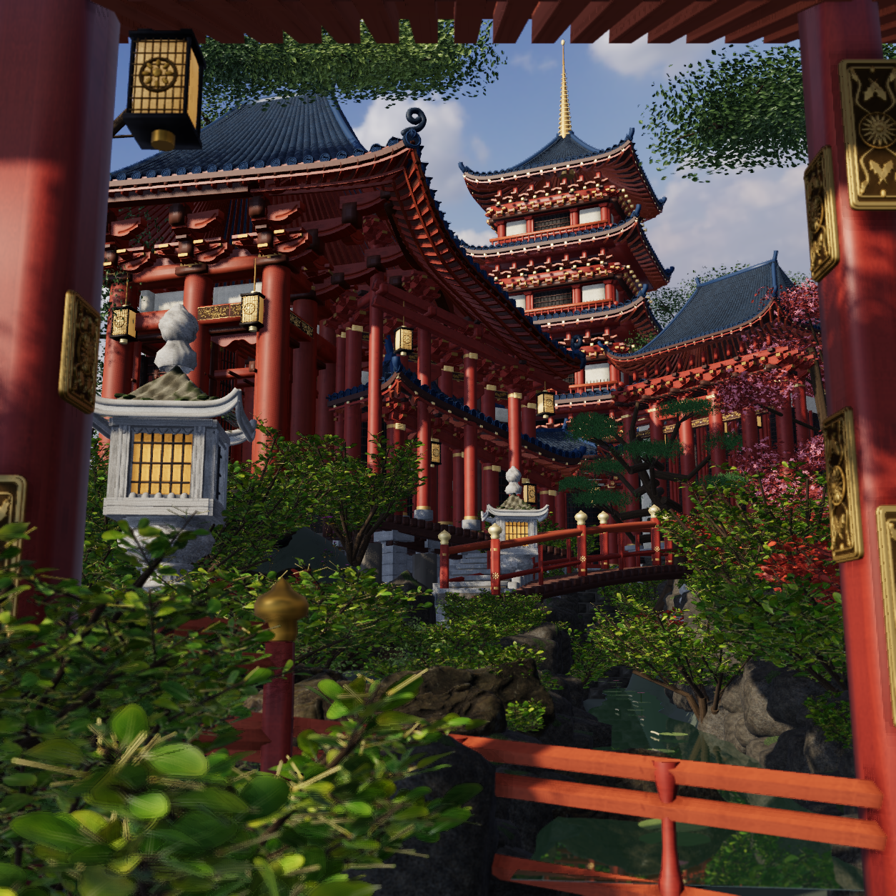
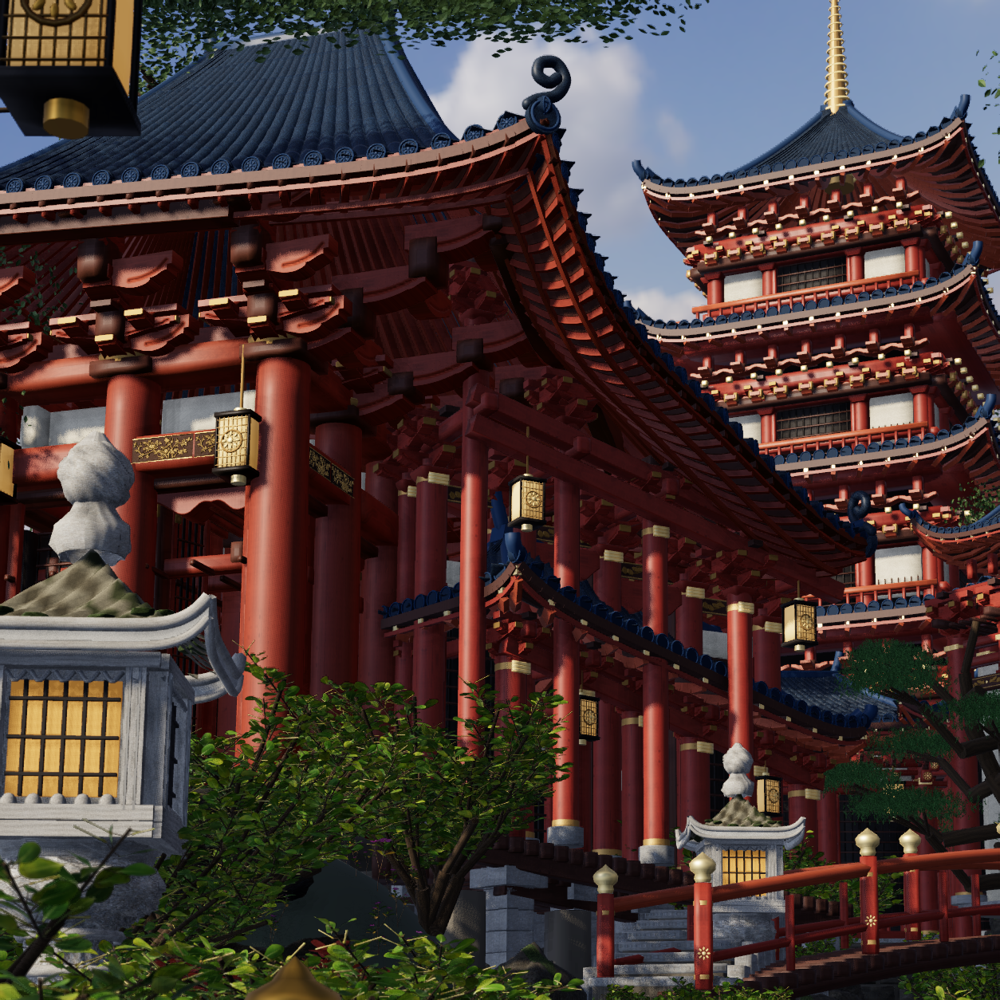
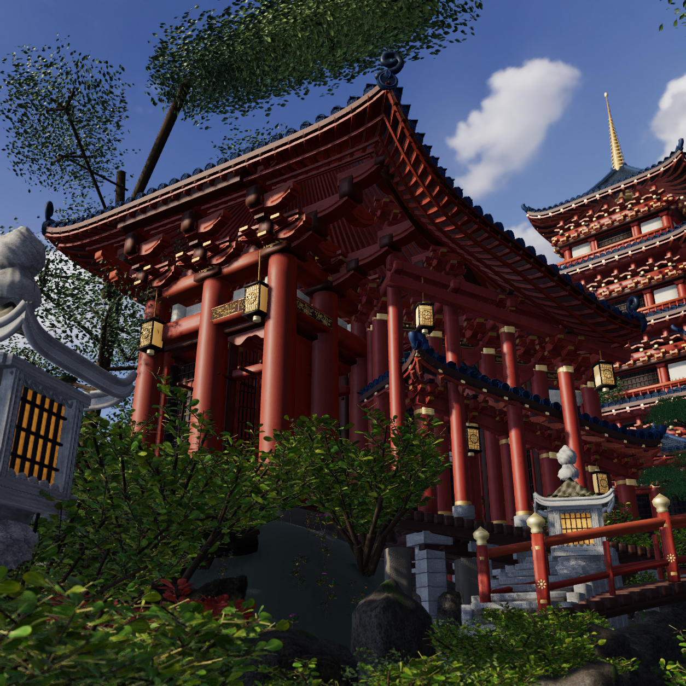

Actual3D checkpoint; photographic acceptance remains false. Source 23bd50dc0446813cbed88cc6ac3de7dfa178c31a548848f3838d1bf43c1a823b. All comparisons below use the supplied photograph and genuine native images, with no repainting or added grading.
Stepped carved bearings, retired repetitive sleeves, one coherent shadow-casting sun/sky and fixed actual porch radiance. Original191 portals/supports,171 receiver arrays, camera/site/bridge/garden placement and real assets are retained. Native technical validity is not photo acceptance.





The hero is a separate1254 render from the physical reference camera's730-source-pixel subfrustum at [180,110]. Low3q is position [1.6,2.2,5.6], target [-3,8.2,-8], FOV51. The reference camera/path are unchanged.
The scene remains strongly CG and photographically unaccepted. Exact bracket carving/cushion profiles, roof contours and ornamental specificity still differ. The fixed porch environment is an approximate one-bounce field, not spatially resolved path-traced GI. The photograph has richer warm indirect transport and more varied material wear. Stone-lantern forms and foliage/forest morphology remain off-reference. No new camera movement, film, Blender or physical export is claimed.